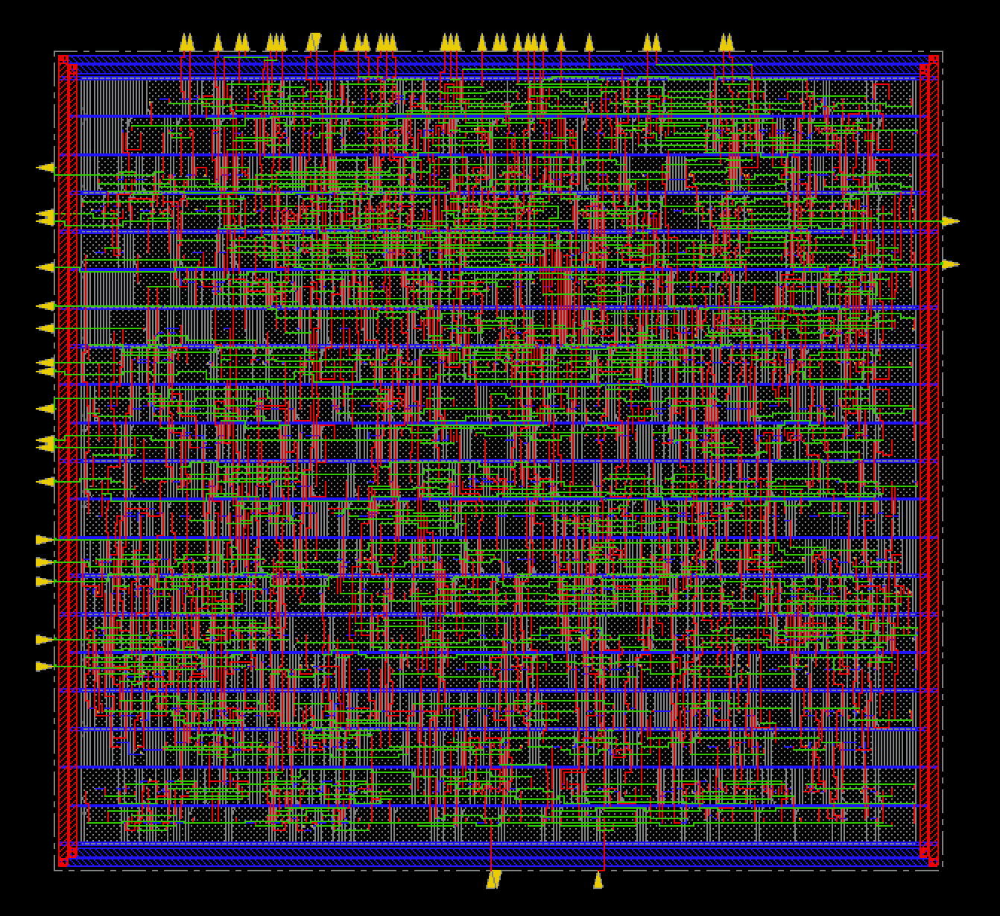

Portfolio
Custom digital IC designs built from the ground up using industry standard EDA toolchains and software.
Designed a fully operational penalty shootout game ASIC targeting approximately 7,000 transistors. Implemented LFSR-based pseudo-random number generation for unpredictable shot placement alongside register-level multiplication for game logic. Wrote FSM controller and datapath modules in Verilog, simulated in QuestaSim to verify correct operation, and modeled the complete transistor-level schematic and physical layout in Cadence Innovus with synthesis via Synopsys Design Compiler. Performed routing and filling in Magic VLSI using a 64 pin package and post-layout verification using IRSIM to ensure robust performance.
